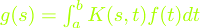

Bryan W. Lewis
I prefer to forage, and I enjoy many mushrooms, other wild foods, and living simply.
Everyone working on scientific computing problems should consider using R, a wonderfully powerful and expressive system for computation and visualization.Send electronic mail to me at: blewis@illposed.net.
There are two kinds of people in the world, those that believe in dimensionality reduction, and those that believe there are 7 billion kinds of people in the world.—told to me by Jenny Bryan
de todos ha de haber en el mundo—Miguel de Cervantes
There's lots of room left in Hilbert space!—Saunders Maclane
We can listen, at any time, to what there is to hear. I do that with great pleasure, and often.—John Cage
A supercomputer is a device for turning compute-bound problems into I/O-bound problems.—Ken Batcher
The way of mathematics is to make stuff up and see what happens..—Vi Hart.
The way of mathematics is to make stuff up and see what happens..—Vi Hart.
Where does that weird phrase 'ill-posed' come from?
Jacques Hadamard defined a "well-posed" problem in a 1902 paper, Sur les problèmes aux dérivées partielles et leur signification physique, Princeton University Bulletin, to be a problem that satisfies:- a solution exists,
- the solution is unique,
- the solution depends continuously on the data.

(something called a first-kind Fredholm integral equation) is pretty interesting.The generic problem is to solve for the function f, knowing everything else, a kind of inverse problem. When K is a "smooth" function, and when a and b are finite (common conditions in many real-world situations), then this problem becomes peculiar: If the observed function g is contaminated by any amount of error, no matter how tiny (say, from measurement), then the problem can become unsolvable! In particular, the solution does not depend continuously on the data. Another way to think about it is that the range of such operators is full of holes—peturbing g by a tiny amount may yield something not in the range.
Hadamard didn't like this extreme sensitivity to arbitrarily small error. When a or b above are infinite, or K non-smooth, or another term is added to the equation, then the problem becomes "well-posed." Despite his feeling that something was wrong with this equation, that is not the case—it pops up in many applications including, for example, image de-blurring. I like thinking about these related problems, and thus, illposed.net.
For the curious, the Riesz-Schauder corollary to the Fredholm alternative explains why the problem is so sensitive to error. Even fully discrete, finite-dimensional approximations to problems like this, called "discrete ill-posed problems" by Per Christian Hansen, are tricky to solve.
Mathematicians have started to prepare for a profound shift in what it means to do math. (An interesting article in Quanta magazine)
Per Enflo may have solved the invariant subspace problem in Hilbert space Holy cow!
Some Garrett county Maryland mushrooms
Our book: A Computational Approach to Statistical Learning.
A brief note on confusion matrices: https://illposed.net/confusion.html.
The eminent statistician Frank Harrell wrote these important, basic notes on the distinction between classification and prediction: https://www.fharrell.com/post/classification/.
Here is a nice paper by Mary Phuong and Marcus Hutter that makes a great case for presenting formal reference implementations (or so-called psuedocode) of deep neural network algorthms. They exhibit reference implementations for the Transformer, perhaps the most important and widespread deep neural network approach in use today. Phuong and Hutter point out that few good reference implementations exist in the literature and call out a book from 2021:
"For a rare text-book example of pseudocode for a non-trivial neural network architecture, see Algorithm S2 of [SGBK + 21], which constitutes a complete, i.e. essentially executable, pseudocode of just 25 lines based on a 350-line Python Colab toy implementation"Ahem. Of course our book, A Computational Approach to Statistical Learning, came out in 2018 and includes a good working reference implementation of a nontrivial deep neural network. I guess if you don't write in Python these days, the machine learning community just doesn't know you exist.
Here is a talk I gave about parallel computing with R at the RStudio 2020 conference in honor of my friend Steve Weston: https://resources.rstudio.com/rstudio-conf-2020/parallel-computing-with-r-using-foreach-future-and-other-packages-bryan-lewis.
Reading Richard Wesley's recent post on DuckDB and range joins (https://duckdb.org/2022/05/27/iejoin.html) inspired me to update an example on that topic I wrote last winter: https://bwlewis.github.io/duckdb_and_r/ranges/ranges_redux.html. The results are somewhat mixed: DuckDB performance is good but sadly, not in the R package version :(
Henrik Bengtsson and I are working on future.redis, an elastic distributed computing backend for R's future package. It's almost good to go, we expect a CRAN-ready version in July or so.
Richard Varga (1928--2022) Here is a fun interactive example of some eigenvalue inclusion methods that Richard Varga, Alan Krautstengl, and I worked on for ETNA 25 years ago(!) https://bwlewis.github.io/cassini/. Varga, among the giants of numercal analysis, was a kind and supportive mentor to many many students, including me. I was fortunate to work with Professor Varga on a few other projects, and learned a lot from him and from his seminal book Matrix Iterative Analyis.
Commercially-driven academic publishing has been broken for a while (see, for instance, https://www.latimes.com/business/hiltzik/la-fi-uc-elsevier-20190711-story.html), and it continues to just get worse. This article by Eiko Fried is worth reading: Welcome to Hotel Elsevier: you can check-out any time you like ... not. Look, if you're a researcher publishing research, please first consider submitting your work to a free open-access journal. There are plenty of very high-quality free and open peer-reviewed journals in many fields today. For instance in numerical analysis consider ETNA (http://etna.ricam.oeaw.ac.at/). Or, if you're working on statistical computing consider the Journal of Statistical Software. Many more such journals exist! One more thing, if you review for journals, think hard about supporting companies like Elsevier with your valuable labor!
Fungi (and slime molds) in the news
If you like data frames and you like them fast, check out this Rust language project: https://github.com/pola-rs/polars. See my revised "as-of"-style database join comparisons between R, Python, DuckDB, etc. that now include polars examples, https://bwlewis.github.io/duckdb_and_r/asof/asof.html, for one illustration of its impressive performance.
Whenever I want to sound smart about AI and modern machine learning, I try to catch up by reading Lilian Weng's blog. Her posts are beautifully written in a way even I can understand and full of great references.
I enjoy reading Jay's Blog.
doRedis is an elastic and fault-tolerant parallel back end for R's foreach parallel computing package that uses Redis to coordinate the work: elastic-r-redis.pdf. It's available on CRAN.
This website is now (July, 2021) hosted on Sourcehut. It doesn't use cookies or JavaScript (except in linked pages where required).
R data.table brass tacks (the pointy part)
Denis Rystsov wrote this remarkable paper more than 3 years ago: CASPaxos: Replicated State Machines without logs. I was astounded by it then and still am.
Fastr, the GraalVM R Runtime and a silly performance example. fastr_thoughts.html.
A lament about unconstructive criticism of a widely discussed study that appeared last year.
Thoughts on magrittr pipes (a very R-language specific note).
Hao Huang proved the sensitivity conjecture with nice, simple tools from matrix theory: https://arxiv.org/abs/1907.00847.
A thought-provoking recent paper on progress by neural network recommendation systems, or lack thereof, by Dacrema, Cremonesi, and Jannach: https://arxiv.org/pdf/1907.06902.pdf. It's so full of great observations I could quote it endlessly here, but you should just read it!
Model SR2 SVG Slide Rule, an SVG-based slide rule that can be scripted with Javascript.
A real whopper of a bug in C interfaces to core Fortran libraries like BLAS and LAPACK from Tomas Kalibera: https://developer.r-project.org/Blog/public/2019/05/15/gfortran-issues-with-lapack/index.html, since addressed by both GCC and R--see https://cran.r-project.org/doc/manuals/r-devel/R-exts.html#Fortran-character-strings.
A silly note on virtual mushroom foraging with R: https://rviews.rstudio.com/2019/05/13/virtual-morel-foraging-with-r/ (it's really a primer on using RSelenium to mine image data from the web).
Electronic Transactions on Numerical Analysis is a pioneering free, open, peer-reviewed electronic mathematics journal. Come celebrate its 25th birthday in Cagliari: http://bugs.unica.it/ETNA25/. See you there!
Version 2.3.3 of the irlba package (a bug fix release) is available, see https://cran.r-project.org/package=irlba and source code repository here: https://github.com/bwlewis/irlba. Thanks especially are due to Aaron Lun at the CRUK Cambridge Institute (https://github.com/LTLA) for his contributions, and to the many users helping to find problems in the software. I'm working actively on some new algorithms for improving performance when the singular values are clustered and for some other things. We plan to post a vignette on the future direction of the package on GitHub soon.
Here are some old notes (from late 2017) on an example about fraud detection using a neural network autoencoder, from the RStudioblog originally, for your interest: autoencoder.html.
A simple template for simple and basic HTML slide presentations https://github.com/bwlewis/slides.
Manny Salzman's wondrous trip https://www.coloradoindependent.com/171325/manny-salzmans-long-strange-and-wondrous-trip. Here is a photo of Manny and Joanne (and Laura Wilson in the netted stinkhorn disguise and me, as some kind of clavaria species) in Telluride: manny.jpg. And I just found this great picture of Gary and Manny from Telluride in 2012: Gary & Manny.
{kind=link}
{kind=link}
The Ohio Mushroom Society just finished a great summer foray in the Zaleski Forest in the Appalachian foothills of Ohio. Despite dry conditions, a lot of interesting species were found including Boletus Roodyi and many other interesting Boletes and an unusual chanterelle with a slight purplish color on its cap that looks kind of like cantharellus amethysteus. John Plischke III gave a hilarious and informative talk on foraging boletes, something like "Mycologists in cars foraging boletes." He and Laura Wilson also prepared a possibly unclassified Tuber (truffle) species for DNA sequencing and entry into the http://mycoflora.org/ project. And the famous Walt Sturgeon presided as chief mycologist and identifier. The OMS main fall foray will be in Hiram, Ohio on the weekend of October 6th.
Melissa O'Neill's PCG family of random number generators is really interesting. Strangely, it brought out some hostile responses from other researchers, including this one from Sebastiano Vigna; a good example of a bad way to critique ideas. Read O'Neill's gracious response for the right way to respond to that.
Douglas Hofstadter on Google Translate.
Here is a simple new containerized way to run Tomas Kalibera's indispensable rchk tool for R packages with compiled code, based on Singularity: https://github.com/bwlewis/rchk/blob/master/image/README_SINGULARITY.md.
Julia Silge wrote very cool notes about computationally efficient word vector computation, https://juliasilge.com/blog/tidy-word-vectors/, inspired by Chris Moody at Stich Fix http://multithreaded.stitchfix.com/blog/2017/10/18/stop-using-word2vec/. I love this approach!
If you're interested in a great reference on practical parallel computing, I recommend Norm Matloff's book: Parallel Computing for Data Science with Examples in R C++ and CUDA.
A thoughtful talk that I enjoyed on distributed ledgers/blockchains by Vili Lehdonvirta: https://youtu.be/eNrzE_UfkTw.
A short note on regularization, correlation, and network analysis using stock prices: https://bwlewis.github.io/correlation-regularization/ (uses the new threejs package below).
A substantially new version of the R threejs package, 0.3.1, is now on CRAN! The new version is focused on enhanced visualization of igraph objects (networks), and includes support for graph animation, crosstalk widgets, and much more.
I gave a talk on projection methods at R/Finance in Chicago in May (of course!): https://bwlewis.github.io/rfinance-2017/. Some of those ideas are still developing...we'll be working on them over the summer.
Michael Elad wrote an interesting editorial on deep learning in SIAM News: https://sinews.siam.org/Details-Page/deep-deep-trouble-4.
Some more notes on PCA over full-genome variants from the NIH 1000 Genomes Project, and on computing in parallel with R:
- Brief overview
http://bwlewis.github.io/1000_genomes_examples/PCA_overview.html
- Notes on the parallel computation
http://bwlewis.github.io/1000_genomes_examples/notes.html
Some notes on R and Singularity, a lightweight container system well-suited to HPC: https://bwlewis.github.io/r-and-singularity/.
A celebrated recent paper on the fallacy of the hot hand fallacy worth reading! http://dx.doi.org/10.2139/ssrn.2627354 Miller, Joshua Benjamin and Sanjurjo, Adam, Surprised by the Gambler's and Hot Hand Fallacies? A Truth in the Law of Small Numbers (November 15, 2016). IGIER Working Paper No. 552.
The dada manifesto
After recently upgrading my cheap laptop to Ubuntu 16.04 I discovered that my old network manager scheme for randomizing hardware MAC address broke. I saw that the latest build of network manager introduced a new scheme for doing this, but was unable to get that to work in Ubuntu (see for instance this thread https://bbs.archlinux.org/viewtopic.php?id=213855). Frustrated with making such a simple thing so difficult, I stripped out all that junk from my operating system and now use this trivial script to manually manage my wifi network interface: wifi. The script doesn't cover all connection cases, but less common connections can usually be manually configured without much problem.
Friends and I are working on some new methods for fast and efficient thresholded correlation, suitable for very large-scale problems: preprint paper and corresponding prototype R package github.com/bwlewis/tcor. Here is an example that walks through correlation of TCGA RNASeq gene expression data: https://github.com/bwlewis/tcor/blob/master/vignettes/brca.Rmd.
A few folks asked how I install R on Linux for my own use. This is how I do it: r-on-linux.html.
Some "big data" genomics problems are easier than you might think. These R examples walk through PCA and overlap join problems involving genomic variant data from the 1000 Genomes Project: https://github.com/bwlewis/1000_genomes_examples. I recently added some examples that show how to compute PCA across the whole genome here http://bwlewis.github.io/1000_genomes_examples/PCA_whole_genome.html. For instance, using plain old R we can compute PCA across all genomic variants in the 1000 Genomes data on a single Amazon EC2 instance in only about 8 minutes!
I was honored to participate again in the 2016 NYR event/party/conference, http://www.rstats.nyc/, and saw many wonderful talks there. Here is a link to a video of my talk: https://youtu.be/PM7O6EGakKY and all the talks: http://www.rstats.nyc/2016.
You should really be reading Andrew Gelman's blog.
Geeks are the new jocks http://www.wsj.com/articles/a-data-scientist-dissects-the-2016-nfl-draft-1461793878
R/Finance makes Chicago the place to be every May. As usual I advocate for the obvious, avoid complexity and keep things simple: r_finance_2016.html. As you can see, I'm a big fan of feather.
I gave a talk at Kent state on cointegration and its implementation http://illposed.net/cointegration.html.
Mike and I have been writing down our working notes on generalized linear models. Still incomplete and a bit rough, but maybe interesting to somebody... Our focus is on numerics and performance. See http://bwlewis.github.io/GLM and the associated project https://github.com/bwlewis/GLM.
A thoughtful talk by Douglas Adams (1998) http://ia800202.us.archive.org/9/items/biota2_audio/biota_adams.mp3, "The fact that we live at the bottom of a deep gravity well, on the surface of a gas covered planet going around a nuclear fireball 90 million miles away and think this to be normal is obviously some indication of how skewed our perspective tends to be..."
I was invited to give a few short talks at Microsoft's R and Python day in which I urged data scientists to not get so hung up on languages and think more about literature. We also discussed the AzureML package for R; see r_and_python.html and azureml.html.
A few of my incidental R projects recently needed very fast data compression/decompression. R's gzip implementation is excellent overall. But I wanted a bit more speed, which led to this: https://github.com/bwlewis/lz4. The lz4 method by Yann Collet is extremely fast at decompression, you can read more about it here: lz4.org.
Jedediah Purdy defends Thoreau in the Atlantic from the bitingly provacative article by Kathryn Schulz in the New Yorker. Henry Thoreau is either a "genuine American weirdo" or narcissistic author of "cabin porn" or, perhaps, both. I really enjoyed reading these gems.
I gave a talk at the University of Rhode Island Friday, September 18th called "Math in the Time of Data." Slides: http://illposed.net/uri.html
I gave a talk Wednesday, September 16th at the Boston R meetup on thinking small about big data. Slides are here: boston_rug_sept_2015.html.
Fascinating data from the Department of Education: https://collegescorecard.ed.gov/data/
A really cool negative result: http://dash.harvard.edu/bitstream/handle/1/3043415/imbens_bootstrap.pdf
The Interface conference was in Morgantown, WV this year. I gave a contrarian talk, criticizing some "big data" systems and examples out there and encouraging us to think carefully about solving problems before resorting to using those tools. Here are the slides: think_small.html.
I spoke about the many uses of the singular value decomposition in computational finance at the seventh annual R in Finance Conference in Chicago. Only the very coolest people attend this conference. The slides are here: rf2015.html.
I gave a talk at the NY R conference on foraging and visualization. Here is a video of the talk: https://www.youtube.com/watch?v=OXYX1FVlbdI and slides can be found here: http://illposed.net/nycr2015/
A cautionary note on missing value handling in correlation: http://bwlewis.github.io/covar/missing.html
I highly recommend this article by Frank McSherry summarizing his work with Michael Isard, and Derek Murray: Scalability! But at what COST?. Using some moderately large graph problems as examples, they advocate thinking carefully about problems and their solution methods (seems obvious, right?).
If you missed the Bay Area meetup, I'm giving a longer talk on htmlwidgets at the Cleveland R meetup on Wednesday, February 25th (2015). See http://www.meetup.com/Cleveland-UseR-Group/events/220140560/ for more info.
I'm giving a short talk tonight (27-Jan-2015) in San Jose at the BARUG on htmlwidgets. The crazy amazing line-up of speakers tonight includes Mike Kane, Dirk Eddelbuettel, and Gabe Becker. Not to be missed!!!
I've been learning about clustering methods recently. Here is a link to a simple hierarchical clustering implementation (<50 lines) that is written only in R to make it easy to understand and experiment with: https://github.com/bwlewis/hclust_in_R The algorithm used by the native R hclust function in the statistics package is far faster, so use that in practice.
I wrote up a trivially simple implementation of and examples illustrating Gene Golub's SVD subset selection algorithm. Mike and I are using it in one of our GLM implementations (see below). But it's a cool method and deserves more attention. See http://bwlewis.github.io/GLM/svdss.html.
This is cool: http://xkcd.r-forge.r-project.org/
I asked some questions about ill-posed problems and regularization at Kent State recently. Here are the slides: http://illposed.net/illposed_ksu_nov_2013.pdf. The slides include a simple R program that applies regularization to stock returns in order to cluster stocks by a relevance network graph.
I gave a talk with Jake VanderPlas about SciDB at PyData 2013 NYC. Here is a link to a Wakari notebook: http://goo.gl/ovGaHS
The Redis client for R was recently updated! R package here on CRAN:
http://cran.r-project.org/web/packages/rredis/index.html
Source code here on GitHub:
https://github.com/bwlewis/rredis
And the package vignette (PDF):
redis.pdf
Here are some relatively recent papers I really like:
Network analysis via partial spectral factorization and Gauss quadrature
In Search of an Understandable Consensus Algorithm
A Scalable Bootstrap for Massive Data
Quadrature Rule-Based Bounds for Functions of Adjacency Matrices
Augmented Implicitly Restarted Lanczos Bidiagonalization Methods
OK, those last two are not so new, but they're super-cool.
I gave talk on tips and tricks for performance computing with R at the Cleveland R meet-up on Wednesday, August 7th. Here are the slides: http://goo.gl/gcPezs. Perhaps the most interesting part shows that it's pretty easy to install the commercial but freely available AMD BLAS and LAPACK libraries for R on Windows and Linux.
I gave a talk at the Boston PyData conference (http://pydata.org/) about SciDB-Py -- Jake Vanderplas' new interface between SciDB and Python. The interface defines a numpy/scipy-like array class for Python backed by SciDB arrays. Install the package directly from GitHub with pip install git+ssh://github.com/jakevdp/scidb-py.git.
I've just been reading Patrick Burns' book, http://www.burns-stat.com/documents/books/tao-te-programming/, and really enjoy it.
I gave a talk on SciDB and R and Python at JSM on Sunday, August 4th. Here are the slides: http://goo.gl/A2RPkn.
So you like Python muthaph*kkahz!?! You got it: https://github.com/bwlewis/irlbpy. This is the fastest partial SVD and PCA routine for dense and sparse matrices available in Python. It's restricted right now to real-valued matrices and is still under active development. Mike Kane presents our work at the SciPy Conference next week in Austin June 24--28 (2013).
Whit Armstrong and I ran a seminar on high performance computing with R at the R/Finance conference in May. We emphasized elastic computing using 0MQ and Redis with R. Here are the slides we used: elastic-r-redis.pdf. 0MQ.distributed.computing.pdf.
My lightning talk on SciDB and R for the Boston R meetup on 22-Jan-2013: goo.gl/btioG.
I gave a talk at JSM about R and websockets (this is the session in which Shiny was introduced to the world). Here it is:
http://illposed.net/jsm2012.pdf
And, here is a nifty application of websockets and R in quant. finance:
http://timelyportfolio.blogspot.com/2012/07/hi-r-and-axys-im-d3js-nice-to-meet-you.html.
Here is a silly cool "chat" script for R using websockets (many web clients can share
a super basic R session):
http://illposed.net/rchat.R.
Joe Cheng over at RStudio has taken over active development
of the package.
Slides about the R bigmemory, parallel linear algebra in R, and a preview of what I'm working on with R and SciDB from a recent talk at the Boston R Meetup: http://illposed.net/boston_r_meetup_2012.pdf
One new idea and one old idea that should be better known on the SVD and cointegration (from a recent talk at R/Finance 2012): Lewis_RFinance_2012.pdf.
A data frame promise for R that very quickly extracts subsets directly from raw delimited text files: lazy.frame.html.
A native HTML 5 Websocket library for R: http://illposed.net/websockets.html
I discussed some methods other than Hadoop for analyzing large data with the New York CTO club. My notes are available here: http://goo.gl/PeJwm.
Outlaw talk: "The Betfair Package" at R/Finance 2011: Applied Finance with R, slides: rfinance2011.pdf.
Betfair is the world's largest betting exchange with more than three million global clients. The BetfaiR package implements the Betfair Sports API in the R language, providing direct access to the Betfair sports exchange from R. All of the Betfair Sports API functions are available, including functions for real time market data and user account access. The package also provides a number of high-level functions for sports betting analysis, modeling and graphics.This was the first talk I ever gave where running the examples live would require breaking the law.
Talk: "How good are Krylov methods for discrete ill-posed problems?," March 25--28 AMS meeting in Lexington, KY: http://www.ms.uky.edu/~corso/amsmaa2010/.
Here are some slides:
AMS_Lex_March2010-1.pdf
http://github.com/bwlewis/fls, an implementation of Kalaba-Tesfatsion flexible least squares method for R.
R4P, an R library for Processing.
Ratlab, tools for foolin' with R and Octave (or Matlab) together.
http://etna.math.kent.edu/vol.30.2008/pp128-143.dir/zeros/index.html A newer Java applet illustrating the dynamical motion of the zeros of the partial sums of the exponential function (from work with Richard Varga and Amos Carpenter).